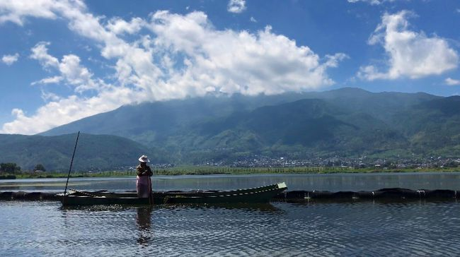
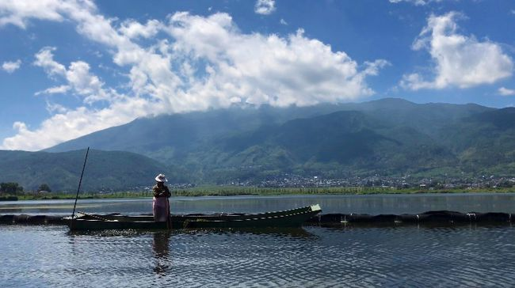
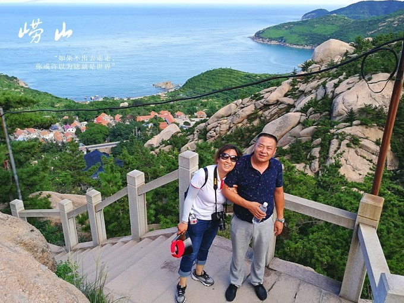
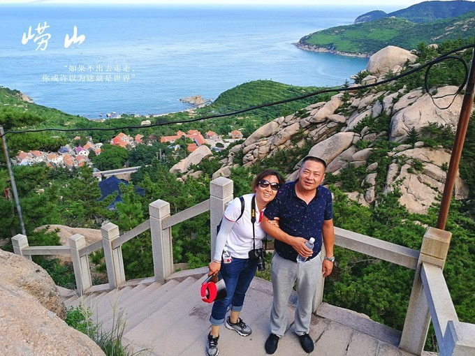
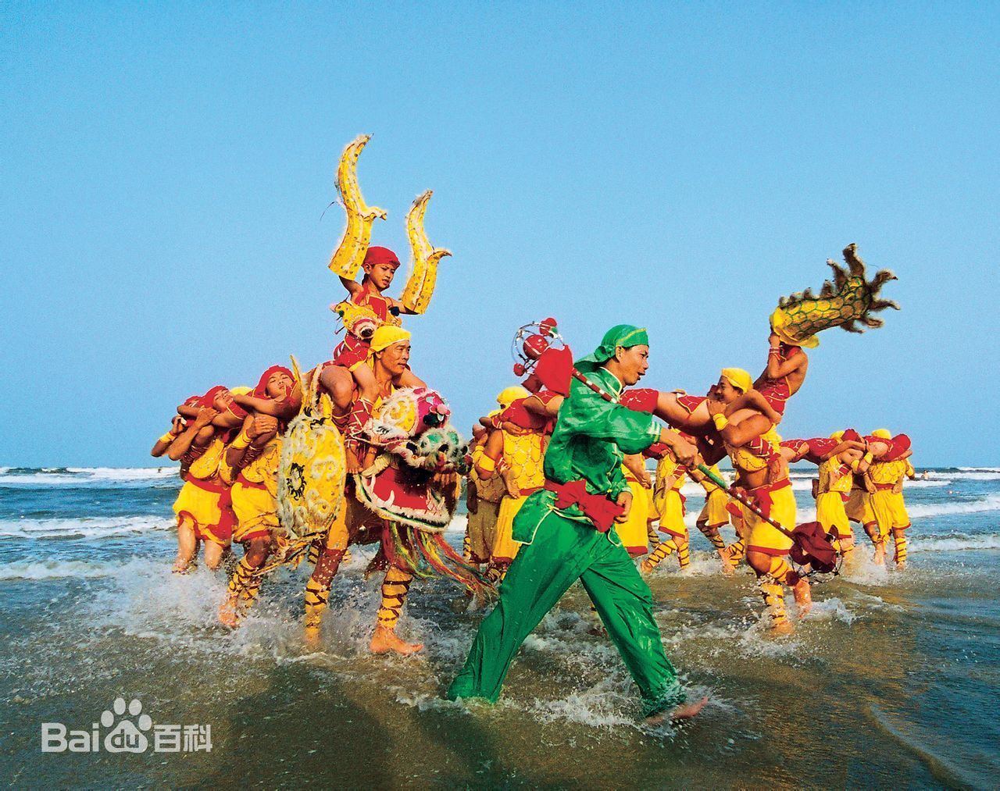
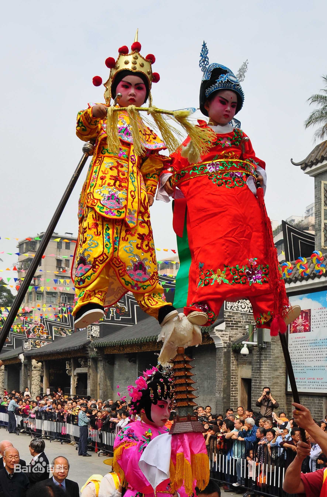
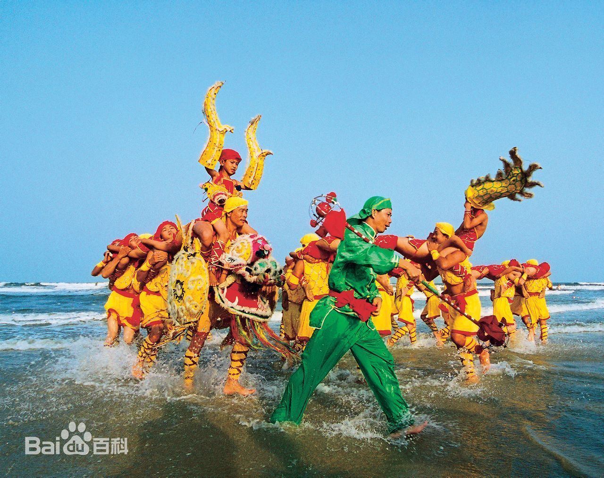
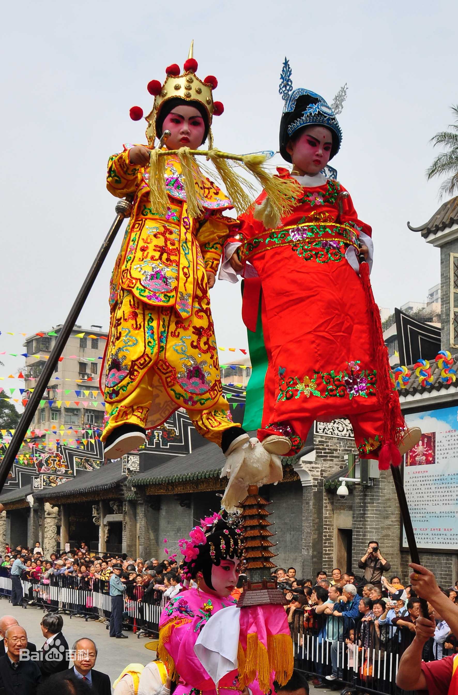

湛江
湛江好玩的地方有哪些？
- 广州
- 湛江
- 大理
- 杭州
- 青岛


 



 



About
湛江必打卡项目——湖光岩
湖光岩风景区位于中国大陆最南端湛江西南郊，2006年9月被联合国教科文组织批准为世界地质公园，是雷州半岛上山清水秀，风景奇特的游览胜地。
景区由火山口湖与火山熔岩组成，湖光岩大约形成于20万年前，是我国现存的三座火山湖之一，也是世界上除德国的Manderscheid之外仅存的玛珥湖，具有天然的自我净化功能，无论旱涝都永远不会干涸。 奇特的是，在这座生态环境良好纯净的湖内没有任何青蛙和蛇等常见水生动物，落叶无影无踪，相传湖中还有曾救助过溺水者的龙鱼和神龟，并且湖内气温常比湖外低了3度，为这座火山湖更添一分神秘气息。
1-3小时 交通 乘坐9路公交车至湖光岩东门站下车即可 门票 门票:50元 开放时间 07:30-18:00 (1月1日-12月31日 周一-周日)

About
湛江必打卡项目—— 特程岛
“特呈”是古越语，“特”即地方，“呈”是和谐吉祥的意思。岛上村民，世代以捕鱼为生。 特呈岛空气清新，气候四季如春，有1000多亩树龄近500年的国家重点保护红树林、400多年历史的冼太庙、抗日革命旧址，还有白沙滩、红怪石（火山石，有较高科研、欣赏价值）。
特呈岛地处热带和亚热带气候，终年平均气温在21—22度之间，四季如春；空气质量优良，海水水质清澈见底，岛上有近百棵参天古榕和断续分布的热带灌丛，沙滩3公里，且沿岸有近千亩受国家保护的天然红树林。
3小时以上 交通 列车路线： 1、湛江火车南站：乘坐30路公交车至避风港站下车，再步行到霞山渔人码头或在海滨公园站下车，步行到霞山海滨码头。 2、湛江西客站：乘坐65K到海滨公园北门站下车，再步行到霞山海滨码头或霞山渔人码头。 省际巴士路线： 1、湛江霞山汽车南站：乘坐30路公交车，到避风塘下车，再步行到霞山渔人码头或在海滨公园站下车，步行到霞山海滨码头。 2、湛江海田车站：乘坐44路公交车，在霞山分站下车，再步行到霞山渔人码头或霞山海滨码头。 航班路线：在湛江机场附近挖尾村站乘坐10路公交车，在霞山分站下车，再步行到霞山渔人码头或霞山海滨码头。 *以上信息仅供参考，具体请以实际情况为准。
About
湛江必打卡项目——硇洲岛旅游区
硇洲岛是一个约20-50万年前由海底火山爆发而形成的海岛，也是中国第一大火山岛。 岛上有南国著名的旅游度假胜地——那晏海石滩，有十分理想的天然海浴场，有与伦敦、好望角灯塔齐名的世界著名三大灯塔之一—硇洲灯塔。还有众多名胜古迹，如宋皇城遗址、祥龙书院、八角井、宋皇碑、宋皇亭等
硇州岛物产丰富，是南海大陆架的一个肥沃渔场，盛产名闻世界的硇洲鲍鱼、龙虾等名贵水产。 繁荣的渔港是也硇洲岛的—大景观。成百成千的渔船云集在码头附近的海面上。夜晚千灯竞辉，渔歌阵阵，仿佛是一座由船只连成的“海中之城”。来岛上玩的话，一定不要错过这个热闹的景象。。
门票 免费 开放时间 全天 (1月1日-12月31日 周一-周日)
湛江习俗
湛江的习俗有很多，人龙舞，飘色，汤鸡拜神，可谓是热闹非凡...
 





人龙舞堪称雷州半岛的传统舞蹈之魂，其节奏鲜明，鼓点强劲，气势雄伟，催人奋进。传说龙能行云布雨、消灾降福，象征祥瑞，所以以舞龙的方式来祈求平安和丰收就成为全国各地的一种习俗。雷州半岛现有东海岛人龙舞和沈塘人龙舞。沈塘人龙舞（原始型）源于明朝嘉靖年间（1523年），沈塘村民为庆祝当地官宦陈仕恺新建沈塘圩而始创人龙（陈仕恺公乃进士出身，富甲雷阳，御诏赴安徽省灵壁县任丞署知县，秋满）。 该舞蹈已被录入《中国民族民间舞蹈集成》(广东卷)，正在积极申报扩展为广东省非物质文化遗产保护项目。 在庆祝活动上，村民们表演了原汁原味和经过包装两种不同风格，精彩独特的人龙舞等民俗表演，受到专家和乡亲们的欢迎。人龙舞增添了节日气氛，也表达了劳动人民对美好生活的祈求。